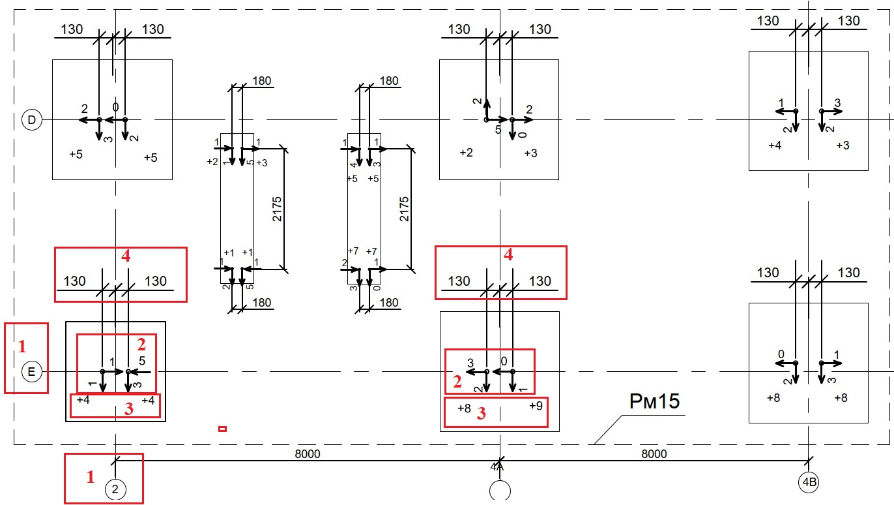

Оси конструкции. Нумерацию осей берем из проекта. Если в проекте оси указаны дробные или латинские обозначения, значит на схему они также переносятся
Отклонения в плане в мм. Стрелками указаны направления отклонений верха анкерного бота в плане.
Отклонение по высоте в мм. Положительное значение со знаком «+» значит, что верх болта находится выше уровня проектного значения, а «-» - что верх болта занижен.
Отклонение по высоте в мм. Положительное значение со знаком «+» значит, что верх болта находится выше уровня проектного значения, а «-» - что верх болта занижен.
Расстояние болтов от оси.
Расстояние болтов от оси.